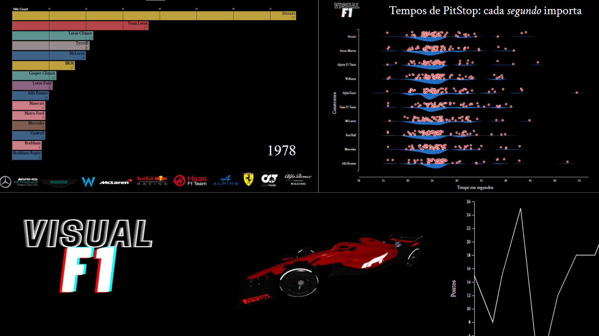

Abstract:
Esse artigo busca abordar diferentes abordagens de visualizações para o meio da Fórmula 1. O esporte depende diretamente do fluxo constante de informações e dados, já que a partir das análises de desempenho ocorre o desenvolvimento das construtoras, mas em geral essas informações não chegam ao público geral - principalmente não de forma visual. O objetivo principal do desenvolvimento do projeto é, portanto, abordar técnicas relevantes de representação de dados para esse meio.
Acesse o artigo
Summary image:
Acesse a visualização
Video teaser:
Equipe: